OUR COMMUNITY IN PICTURES
SPTA gallery.
A visual collection of transport, local places and the wider community connected to Seshego and Polokwane.
THE PLACES WE CONNECT
Our community, in view.
Photographs supplied for this demonstration. Captions identify the subject visible in each image; precise place names and publication permissions remain subject to client confirmation.
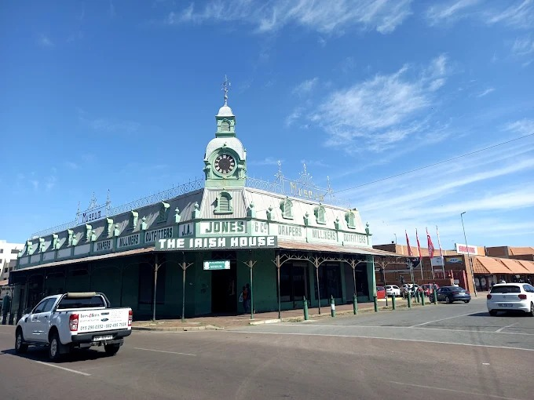
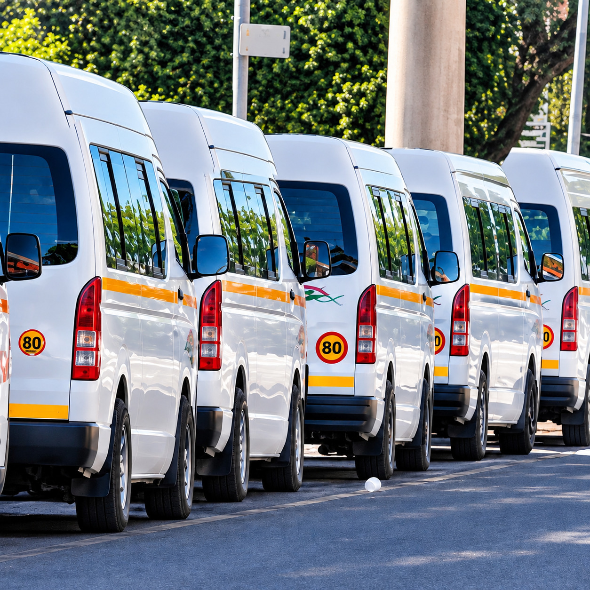
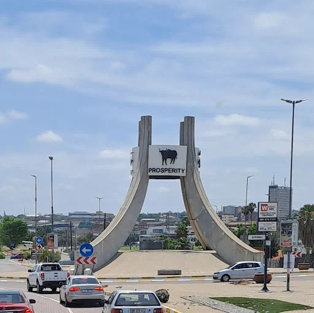
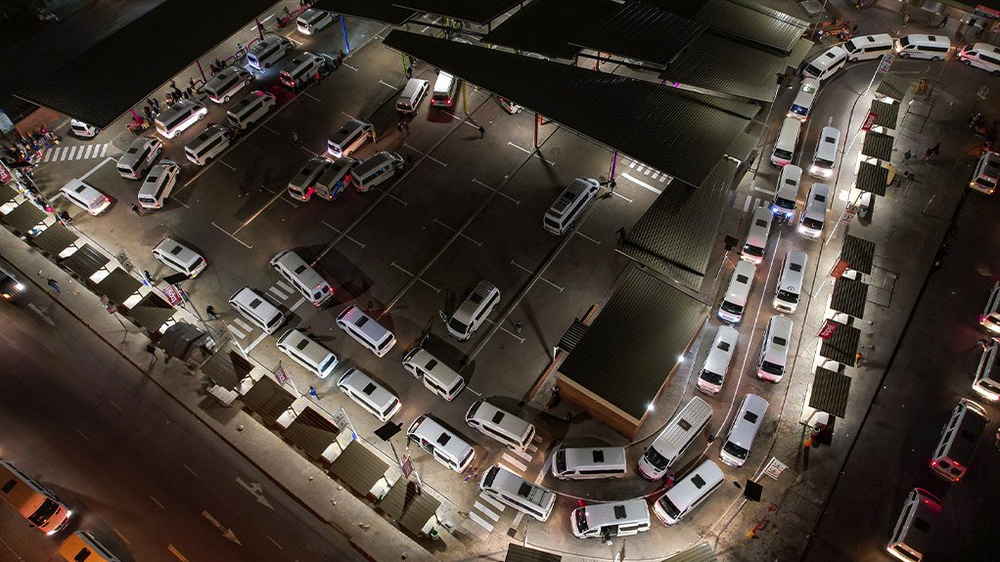
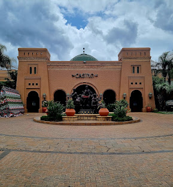
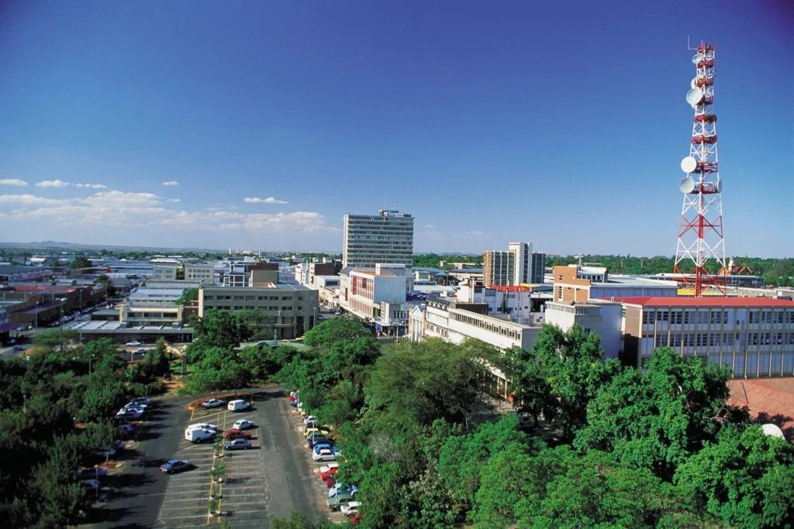
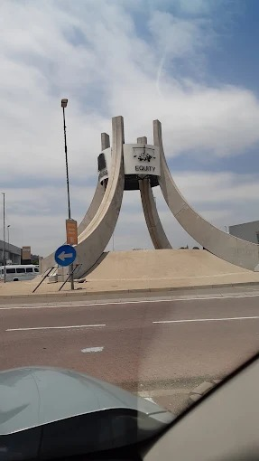
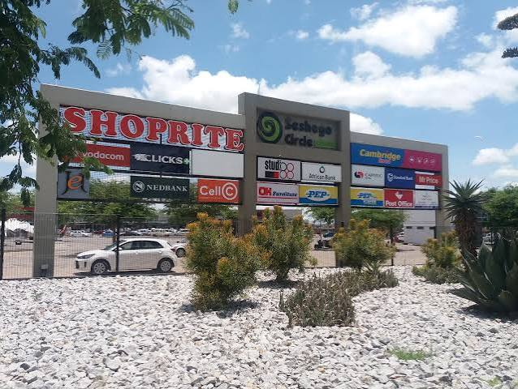
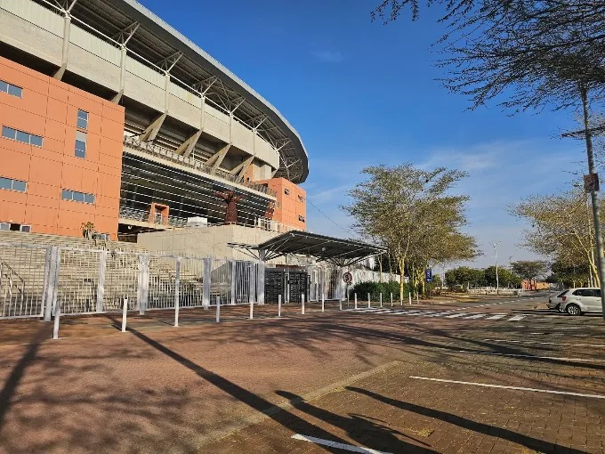
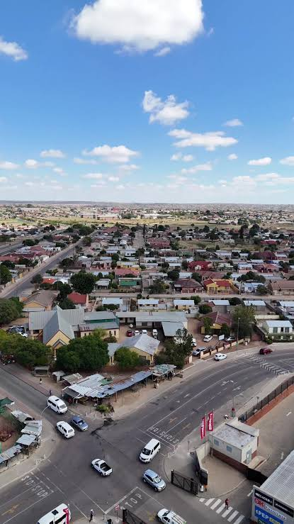
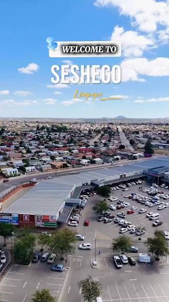
Image files must be present in assets/images/ for this gallery to render. Final captions, location labels and image permissions will be confirmed with SPTA before publication.